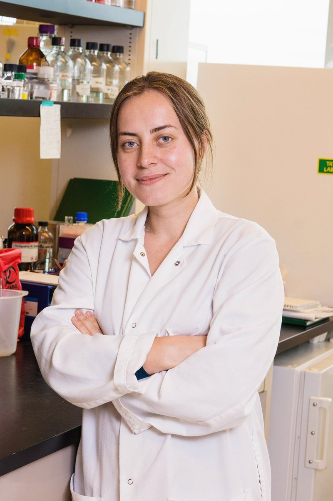

Anna Kuznetsova PhD
Researcher with more than 15 years of experience working across natural products discovery, microbial communities, fermentation, and science and technology commercialization: from marine and soil ecosystems to industrial-scale bioprocess development.

Background
Fermentation Scientist · MARA Renewables Corporation
Uses experimental design and Python/R/Excel analysis to optimize fermentation conditions and evaluate their effect on microbial and microalgal strains; supports facility transfer and scale-up, and conducts phylogenetic characterization of production strains.
Doctoral Researcher · Kerr Laboratory of Marine Natural Products, UPEI
Investigated temperature-dependent antibiotic and natural-product biosynthesis in Arctic marine Streptomyces. Integrated microbial cultivation, LC-MS/HRMS metabolite profiling, genome analysis, and molecular microbiology, with Python/R/Excel for data analysis; generated draft genomes for three marine streptomycetes. PhD in Biomedical Sciences, awarded March 2026.
Researcher / Project Lead · Winogradsky Institute of Microbiology, Russian Academy of Sciences
Studied microbial diversity and biogeochemical processes in hypersaline soils and saline lakes, with emphasis on cyanobacteria, algae, actinomycetes, and prokaryotic communities, using Python/R/Excel for data analysis. Led an RFBR young-scientist grant and teams of 3–5 researchers, and directed a BASF-sponsored soybean fungicide trial that supported product introduction in Russia.
Education
Biomedical Sciences · University of Prince Edward Island
Kerr Laboratory of Marine Natural Products. Temperature-dependent antibiotic and natural-product biosynthesis in Arctic marine Streptomyces.
Graduate Certificate in Science and Technology Commercialization · Simon Fraser University
Graduate-level program focused on commercializing scientific innovations, including market analysis, intellectual property, startup financing, and go-to-market strategies for tech-based ventures.
Soil Science · Lomonosov Moscow State University
Geology, soil chemistry, and biogeochemical cycles — the foundation for a research path that moved from terrestrial systems into marine and industrial microbiology.
Areas of Focus
Biosynthesis of bioactive compounds in marine and cold-adapted microbial systems, and antibiotic production in the context of antimicrobial resistance (AMR).
Microbial and microalgal growth kinetics, lipid accumulation, and DHA production in industrial-scale bioprocesses; evaluating fermentation models against real bioprocess data to inform scale-up decisions.
Diversity and biogeochemical roles of microbial communities in soils, saline lakes, and marine sediments.
Translating scientific innovation into market-ready ventures — market analysis, intellectual property, and go-to-market strategy for tech-based ventures.
Publications
doi:10.1128/mra.00604-22
doi:10.1134/S0026261720060119
doi:10.1134/S0026261718010095
doi:10.1134/S1064229316020149
doi:10.1134/S0026261712010092
Research Grants & Awards
Russian Foundation for Basic Research (RFBR) Young Scientists Grant
Microbial diversity of hypersaline soils at Lake Elton. Led a four-person team, completed funder reporting, and produced two publications and a conference presentation. Total value: $15,000.
Dr. J. Regis Duffy Graduate Scholarship in Science
University of Prince Edward Island. Awarded in two consecutive academic years (2017–2018 and 2018–2019). Total value: $25,000.
BASF-Sponsored Applied Research Project
Evaluation of soybean fungicides; led a three-person team and supported introduction of new products in Russia. Total value: $10,000.
RFBR-Funded Cyanobacterial Diversity Project
Isolation and characterization of cyanobacteria and algae from Kulunda Steppe lakes; completed funder reporting. Total value: $15,000.
Editorial
Editorial Board Member, Microbiology Resource Announcements
Reviews genome-sequencing manuscripts for the American Society for Microbiology, evaluating methodology, assembly quality, and reporting standards for published microbial genome announcements.
Applied and Environmental Microbiology · Environmental Science and Pollution Research International · Microbiology Spectrum
Reviews manuscripts for these journals, evaluating study design, methodology, and data interpretation across microbiology and environmental science.
Contact
Get in touch
Open to conversations on fermentation science, natural products, and microbial research. Send a message below.